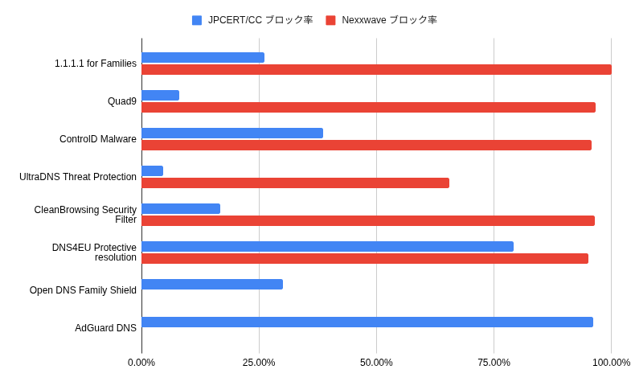

JPCERT/CCが公開したフィッシングURLに対するDNSブロック率比較
マルウェアやフィッシングサイトをブロックする機能を持った公開DNSサーバは1.1.1.1 for FamiliesやQuad9などいくつか提供されている。
Nexxwaveが各DNSフィルタリングサービスのブロック率を経年的に比較している(Public DNS malware filters to be tested in 2025)が、 調査対象ドメインがCERT PolandとURLhausから入手したものであるため欧州のものが多く、日本で不正使用されたドメインが少ない点が日本で使用する際に問題である。
そこで、JPCERT/CCが収集したフィッシングサイトのURL(Phishing URL dataset from JPCERT/CC)を対象に調査を行った。
データの収集
JPCERT/CCが収集したフィッシングサイトURLのうち、2025年1月から2026年1月までの13ヶ月分について、URLのドメイン部分を抜き出した後、2026年3月10日時点1.1.1.1で応答があるものを対象とした。
結果として11130件のドメインが調査対象となった。
#!/bin/bash
# JPCERT/CCのフィッシングURLのCSVを結合
URLS="phishurls.txt"
: > ${URLS}
while read i; do
curl "$i" >> ${URLS}
done <<-EOS
https://raw.githubusercontent.com/JPCERTCC/phishurl-list/refs/heads/main/2025/202501.csv
https://raw.githubusercontent.com/JPCERTCC/phishurl-list/refs/heads/main/2025/202502.csv
https://raw.githubusercontent.com/JPCERTCC/phishurl-list/refs/heads/main/2025/202503.csv
https://raw.githubusercontent.com/JPCERTCC/phishurl-list/refs/heads/main/2025/202504.csv
https://raw.githubusercontent.com/JPCERTCC/phishurl-list/refs/heads/main/2025/202505.csv
https://raw.githubusercontent.com/JPCERTCC/phishurl-list/refs/heads/main/2025/202506.csv
https://raw.githubusercontent.com/JPCERTCC/phishurl-list/refs/heads/main/2025/202507.csv
https://raw.githubusercontent.com/JPCERTCC/phishurl-list/refs/heads/main/2025/202508.csv
https://raw.githubusercontent.com/JPCERTCC/phishurl-list/refs/heads/main/2025/202509.csv
https://raw.githubusercontent.com/JPCERTCC/phishurl-list/refs/heads/main/2025/202510.csv
https://raw.githubusercontent.com/JPCERTCC/phishurl-list/refs/heads/main/2025/202511.csv
https://raw.githubusercontent.com/JPCERTCC/phishurl-list/refs/heads/main/2025/202512.csv
https://raw.githubusercontent.com/JPCERTCC/phishurl-list/refs/heads/main/2026/202601.csv
EOS
# ドメイン部分を抜き出して重複削除
DOMAINS1="domains_1.txt"
cat ${URLS} | cut -d',' -f2 | grep 'https://' | sed -E 's|^"?https?://([^/]+).*$|\1|g' | sort -u > ${DOMAINS1}
# 現時点で応答があるものを抜き出す
function address_resolvable() {
DOMAIN="${1}"
DNS_SERVER="${2:-1.1.1.1}"
local results=$(dig @${DNS_SERVER} ${DOMAIN} A +short +time=2 +tries=1 | grep -v '^$')
if [ -z "$results" ]; then
return 1
else
return 0
fi
}
DOMAINS2="domains_2.txt"
: > ${DOMAINS2}
cat ${DOMAINS1} | while read i; do
echo $i
address_resolvable $i && echo $i >> ${DOMAINS2}
done
各DNSサーバに対して評価
今回調査対象としたDNSサーバにはNexxwaveにあるもの(1.1.1.1 for Families, Quad9, ControlD Malware, UltraDNS Threat Protection, CleanBrowsing Security Filter, DNS4EU Protective resolution)に加え、 OpenDNS Family Shieldと、もしかしたら広告ブロック機能を持つサービスもそれなりにブロックしてくれるのではないかと考えAdGuard DNSを加えた。
Gemini君に以下のシェルスクリプトを作ってもらい、./check_dns_server.sh domains_2.txt 1.1.1.2などとして調査した。
#!/bin/bash
LIST="$1"
DNS="${2:-1.1.1.1}"
function check_blocked() {
DOMAIN="${1}"
DNS_SERVER="${2}"
local results=$(dig @${DNS_SERVER} ${DOMAIN} A +short +time=2 +tries=1 | grep -v '^$')
local is_blocked=true
local found_any_ip=false
if [ -z "$results" ]; then
# そもそもレコードが存在しない、あるいはNXDOMAINの場合
is_blocked=true
else
# 返ってきた各行（IPまたはCNAME）をチェック
while read -r line; do
# IPアドレスの形式（数字とドット）かチェック
if [[ $line =~ ^[0-9]+\.[0-9]+\.[0-9]+\.[0-9]+$ ]]; then
found_any_ip=true
# 0.0.0.0 または 127.0.0.1 でなければ「ブロックされていない」と判断
if [[ "$line" != "0.0.0.0" && "$line" != "127.0.0.1" && "$line" != "156.154.112.16" && "$line" != "51.15.69.11" && "$line" != "146.112.61.108" && "$line" != "94.140.14.33" ]]; then
is_blocked=false
break
fi
fi
done <<< "$results"
fi
# 最終判定の出力
if [ "$found_any_ip" = true ] && [ "$is_blocked" = false ]; then
#echo "[PASS] $DOMAIN はブロックされていません。 (Result: $(echo $results | tr '\n' ' '))"
return 0
else
#echo "[BLOCK] $DOMAIN はブロックされています。"
return 1
fi
}
if [ -z "$LIST" ]; then
echo "Usage: $0 <domain list> <dns server>"
exit 1
fi
TOTAL=$(wc -l < $LIST)
BLOCKED_COUNT=0
while read -r domain; do
check_blocked "$domain" "$DNS"
if [ $? -eq 1 ]; then
((BLOCKED_COUNT++))
fi
done < "$LIST"
echo "--- 調査結果 ${DNS} ---"
echo "総ドメイン数: $TOTAL"
echo "ブロック数: $BLOCKED_COUNT"
echo "ブロック率: $(echo "scale=2; $BLOCKED_COUNT * 100 / $TOTAL" | bc)%"
結果
| サービス名 | DNS Server | ブロック数 | ブロック率 |
|---|---|---|---|
| 1.1.1.1 for Families | 1.1.1.2 | 2910 | 26.1% |
| Quad9 | 9.9.9.9 | 897 | 8.1% |
| ControlD Malware | 76.76.2.1 | 4291 | 38.6% |
| UltraDNS Threat Protection | 156.154.70.2 | 513 | 4.6% |
| CleanBrowsing Security Filter | 185.228.168.9 | 1868 | 16.8% |
| DNS4EU Protective resolution | 86.54.11.1 | 8820 | 79.2% |
| Open DNS Family Shield | 208.67.222.123 | 3355 | 30.1% |
| AdGuard DNS | 94.140.14.14 | 10699 | 96.1% |
このJPCERT/CCのドメインのブロック率を、Nexxwaveの調査結果(2025年6月)と比較したグラフが下図。

結論
意外なことに、AdGuardが最もブロック率が高い結果(96.1%)となり、ついでDNS4EU(79.2%)、大きく間が空いてControlD(38.6%)という順序となった。
欧州中心のデータ(Nexxwaveの調査結果)と比較すると、やはりどのサービスもブロック率が低下する傾向にあり、DNS4EUだけはJPCERT/CCのデータに対しても8割近いブロック率を示したものの、 Nexxwaveの結果では9割以上のブロック率を示した1.1.1.1 for Families、Quad9、ControlD、CleanBrowsingが軒並み4割以下となった。
ただし、今回検証に使用したJPCERT/CCのデータはフィッシングに使われたURLであって、マルウェア配布などその他の脅威に使われたドメインは含まれていない点には注意。